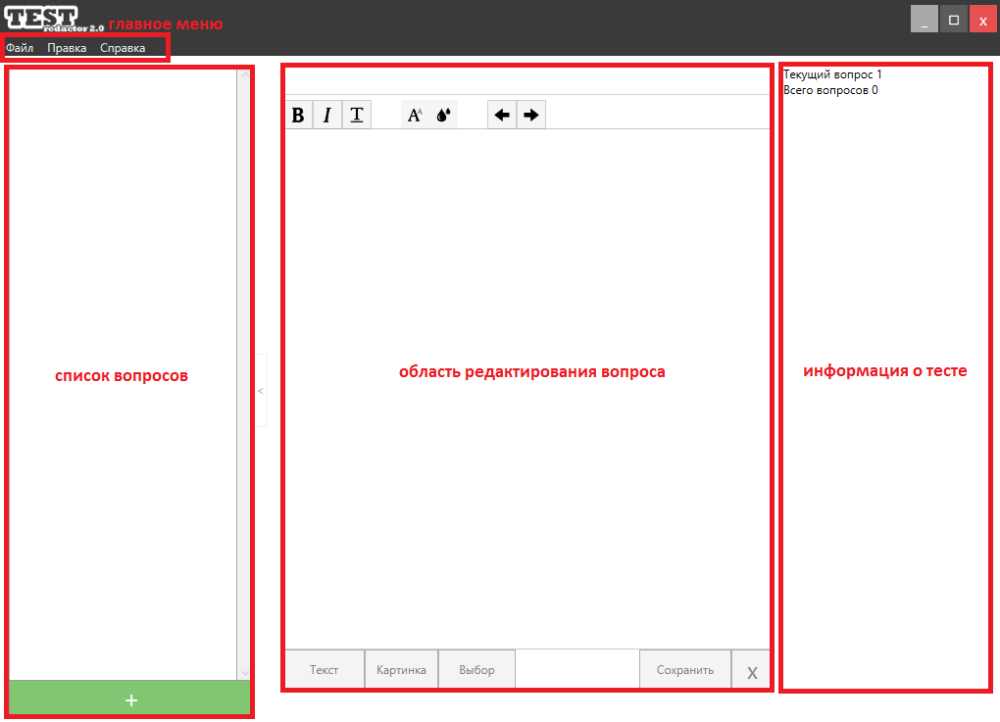

Справка для пользователей
Содержание
1. Назначение проекта
2. Общий вид проекта
3. Принцип работы
4. Некоторые нюансы
1. Назначение проекта
Проект предназначен для преобразования тестов старого формата в новый (из .qtf в .xml) и создания, редактирования
новых тестов в новом формате. Данный продукт является бесплатным и может использоваться для сокращения времени
работы и производительности труда.
2. Общий вид проекта

Главная форма проекта выглядит следующим образом и имеет следующие основные участки:
ГЛАВНОЕ МЕНЮ - меню с основными функциями для работы
СПИСОК ВОПРОСОВ - список всех вопросов данного теста
ОБЛАСТЬ РЕДАКТИРОВАНИЯ ВОПРОСА - поле редактирования формулировки текущего вопроса
ИНФОРМАЦИЯ О ТЕСТЕ - список всех дополнительных данных о тесте (название, дата создания....)
3. Принцип работы
Чтобы начать пользование нужно сначала создать тест (запустить программу, или открыть существующий тест).
После чего нужно добавить вопрос в области списка вопросов. После чего изменить текст вопроса, добавляя
по необходимости картинки, поля для ввода текста, выделяя текст жирным, курсивом, подчеркнутым и задавая цвет.
Так же можно вставлять поля типа ВЫБОР, таких полей может быть одно на весь тест. После чего созданный тест
можно просмотреть при помощи кнопки в меню ПРЕПРОСМОТР, или сохранить результат своей работы.
ПРИМЕЧЕНИЕ: текст вопроса можно редактировать как html, добавляя туда свои финты, типа тегов, разметки,
параграфов и т.д.
4. Некоторые нюансы
При работе с редактором важно помнить несколько важных вещей.
1. при конвертировании теста и последующем его открытии папка с картинками (если есть) должна находиться
в той же папке, где и файл теста и иметь такое же название, иначе картинки могут не загрузиться
2. При редактировании текста вопроса как HTML не желательно использовать двойные кавычки ("), лучше
использовать одинарные, т.к. анализатор текста ориентируется по двойным кавычкам, и это может привести
вообще неизвестно к чему.
3. Если при работе с редактором возникли вопросы, ошибки или другие неудобства - вы можете обратиться, написав
сообщение Владимиру Полюховичу или же забить на это все.